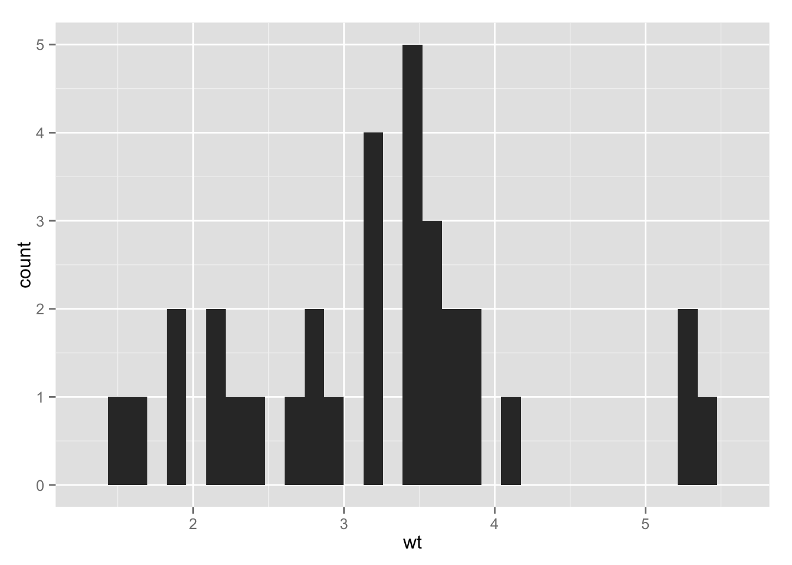
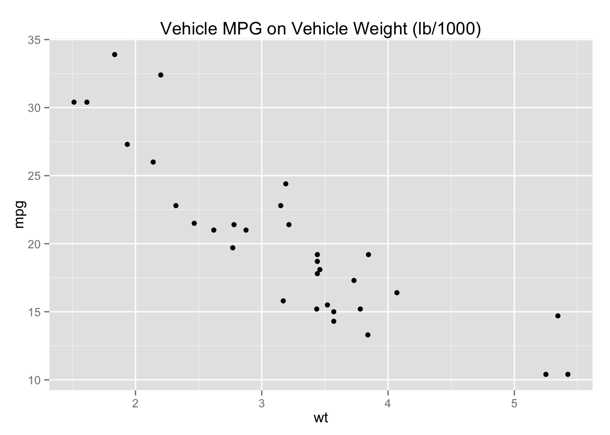
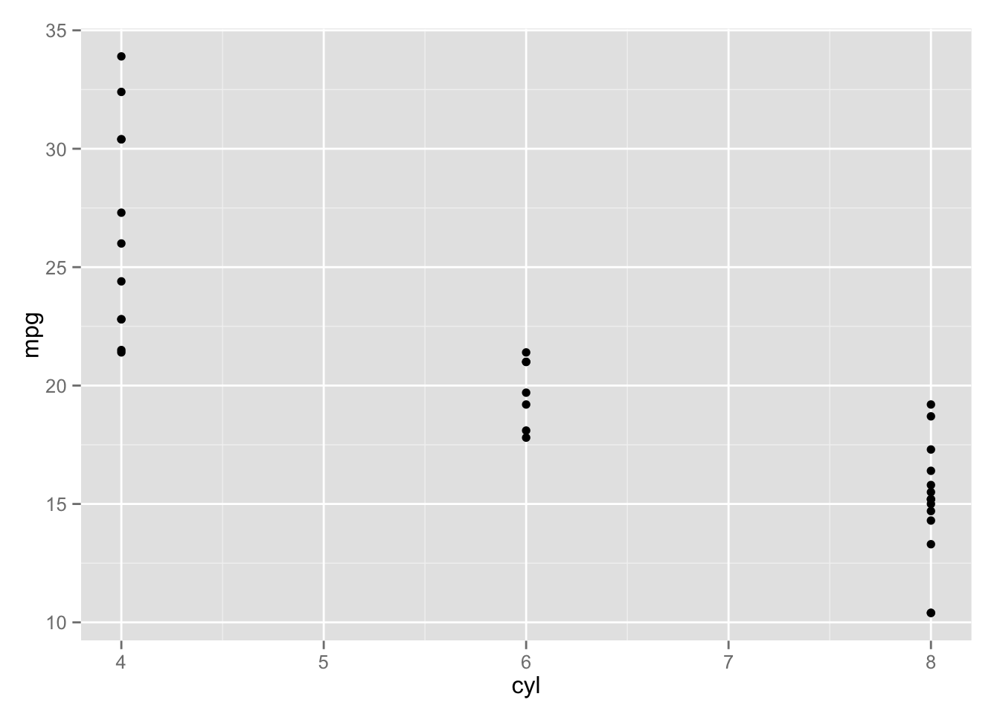
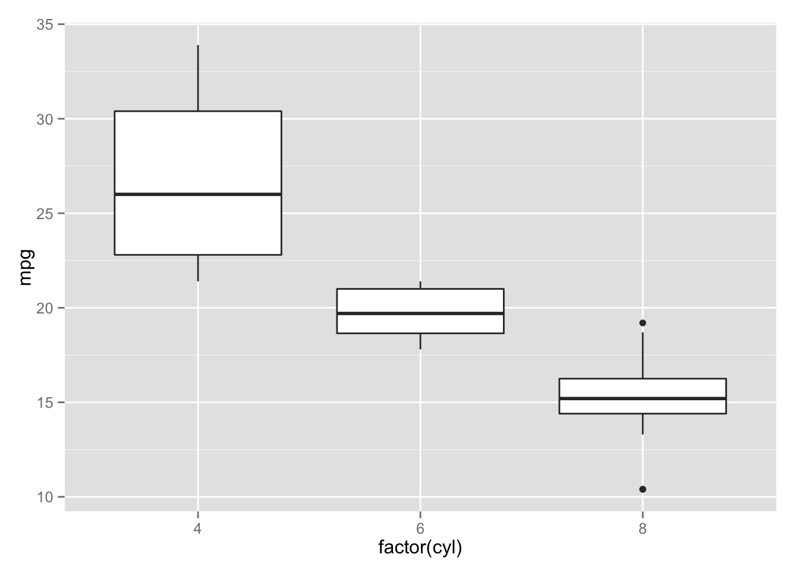
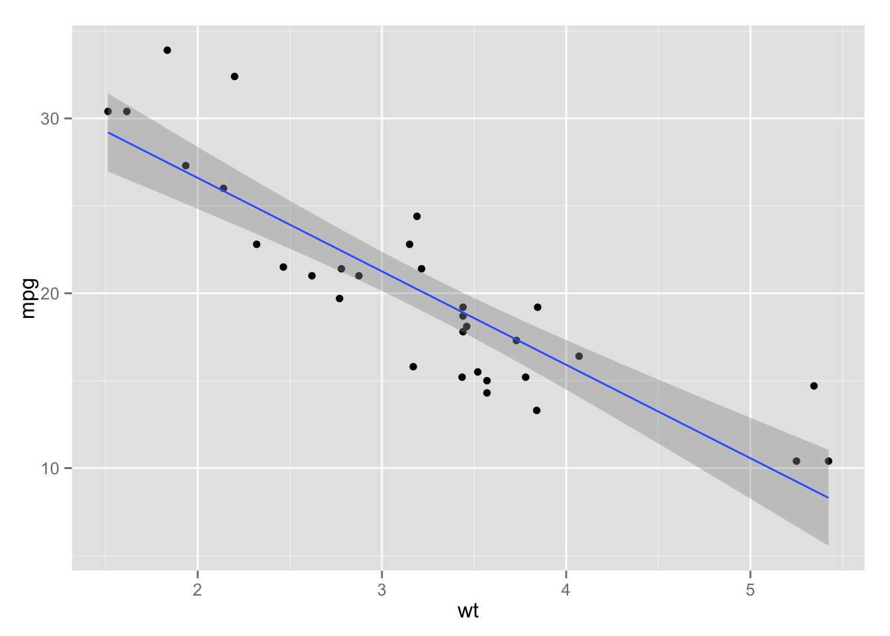
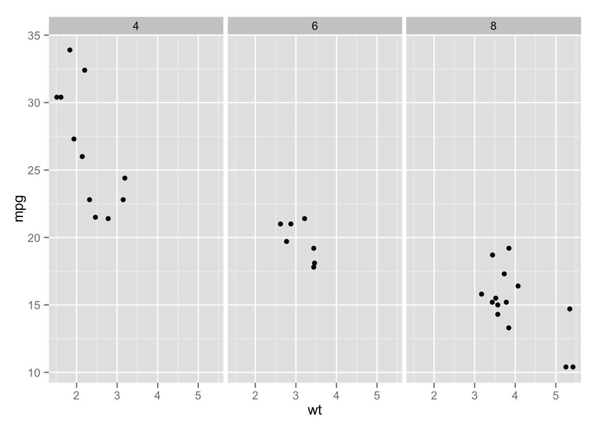
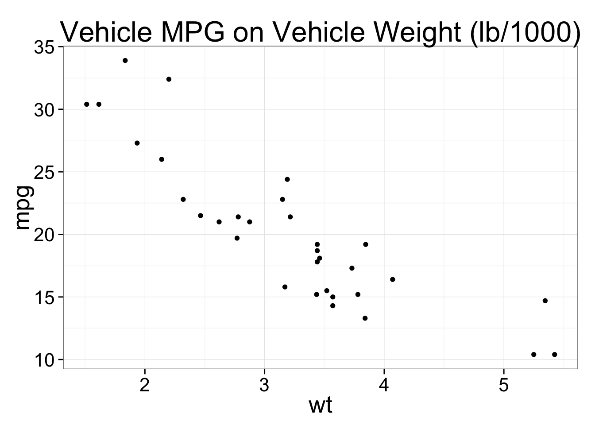
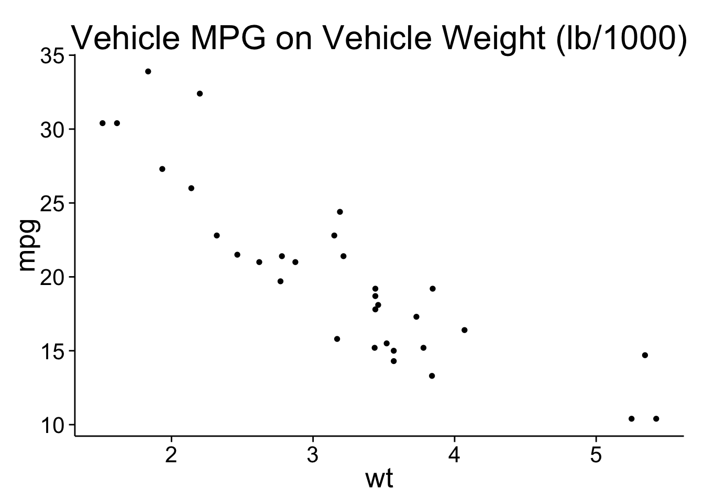

I prefer to not to use the standard graphics facilities in R, which are rather kludgy and take lots of tweaking to make the graphs look great. Instead, I prefer to use the ggplot2 package. You need to install this package using the standard package manager: Tools > Package Manager. Then you will load the packge using the command library(ggplot2).
ggplot2 provides a convenient function called qplot() for making quick plots that don’t require a lot of customization. If you need full control over all the gritty details, then you need to learn more about advanced ggplotting. Lets take a crack at qplot() first.
We will use a built in dataset called mtcars. Lets take a look at the head (i.e. first few rows) of this dataset.
head(mtcars)## mpg cyl disp hp drat wt qsec vs am gear carb
## Mazda RX4 21.0 6 160 110 3.90 2.620 16.46 0 1 4 4
## Mazda RX4 Wag 21.0 6 160 110 3.90 2.875 17.02 0 1 4 4
## Datsun 710 22.8 4 108 93 3.85 2.320 18.61 1 1 4 1
## Hornet 4 Drive 21.4 6 258 110 3.08 3.215 19.44 1 0 3 1
## Hornet Sportabout 18.7 8 360 175 3.15 3.440 17.02 0 0 3 2
## Valiant 18.1 6 225 105 2.76 3.460 20.22 1 0 3 1The simplest usage of qplot() is to provide a variable for the x axis, and a dataframe in which to look for this variable. qplot() will attempt to guess the best geom (graphical geometric representation) with which to display the data. Here we plot a histogram of vehicle weights.
library(ggplot2)
qplot(x=wt, data=mtcars)## stat_bin: binwidth defaulted to range/30. Use 'binwidth = x' to adjust this.
If we specify a variable for the y axis, then the default geom is a scatter of points. This time we will also specify a value for main which is the main title.
qplot(x=wt, y=mpg, data=mtcars, main="Vehicle MPG on Vehicle Weight (lb/1000)")
Let’s do a plot of MPG against number of cylinders.
qplot(x=cyl, y=mpg, data=mtcars)
We got points as the geom, but we can explicitly tell qplot() to use a different geom. Note: we will also convert cyl to a factor (categorical variable). What happens if you don’t convert? Do you understand why this happens?
qplot(x=factor(cyl), y=mpg, data=mtcars, geom="boxplot")
The most common layer you will want to add is a line representing a regression. To do this, we start with the bivariate plot, then add a new layer.
qplot(x=wt, y=mpg, data=mtcars) + stat_smooth(method = "lm")
Suppose we wanted to plot vehicle weight by mpg, but to graphically take into account the number of cylinders. We do that using facets. We provide a formula in the form of rows ~ columns. If we only have one variable we just leave the first part blank, as below.
qplot(x=wt, y=mpg, data=mtcars, facets = ~cyl)
There are a couple of shortcut theme functions that help you customize the look and feel of plots. A very popular one is theme_bw() which gets rid of the default grey background. You can also specify a value for the base text size, to increase size for presentations, etc. All the text elements will scale intelligently. Also check out theme_classic()
qplot(x=wt, y=mpg, data=mtcars, main="Vehicle MPG on Vehicle Weight (lb/1000)") + theme_bw(20)
qplot(x=wt, y=mpg, data=mtcars, main="Vehicle MPG on Vehicle Weight (lb/1000)") + theme_classic(20)